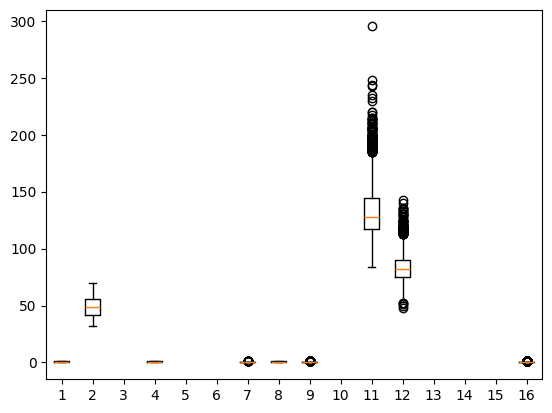
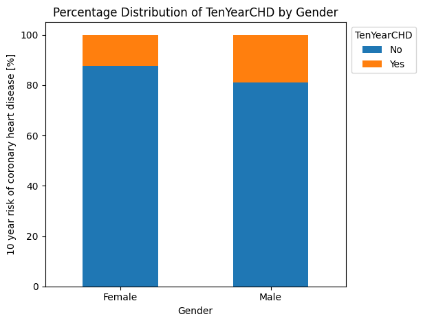
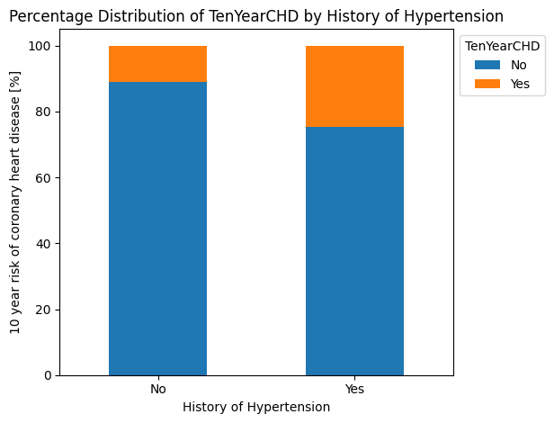
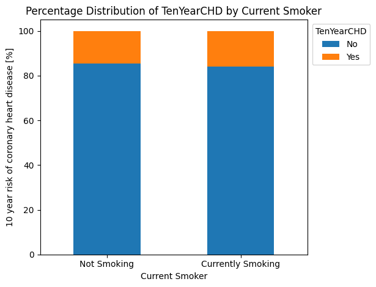
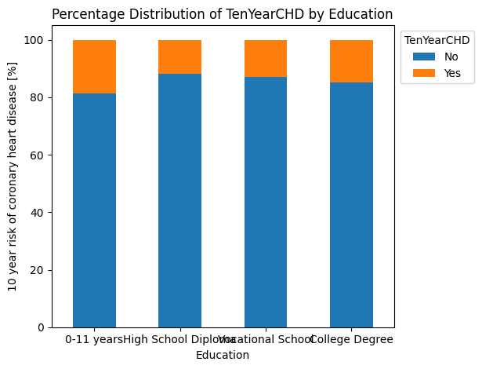
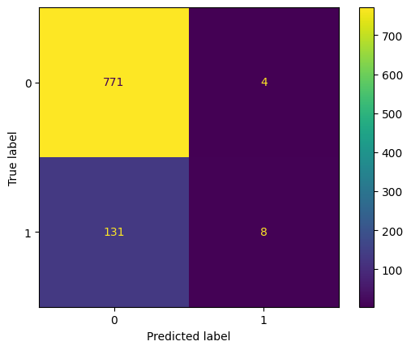
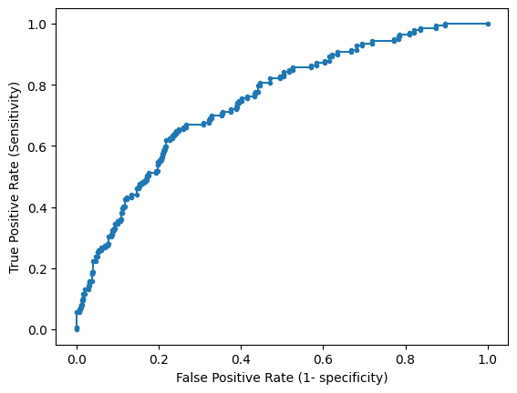

import pandas as pd
import numpy as np
import statsmodels.api as sm
import matplotlib.pyplot as plt
from sklearn.preprocessing import scale
from sklearn.model_selection import train_test_split
from sklearn.metrics import ConfusionMatrixDisplay
from sklearn.metrics import confusion_matrix, classification_report, roc_curve, roc_auc_score
from sklearn.linear_model import LogisticRegression
from patsy import dmatrixQuestion 3
df = pd.read_csv("heart_disease_data.csv")
display(df.head())
print('Shape of dataframe is: ',df.shape)
fig = plt.boxplot(df)| male | age | education | currentSmoker | cigsPerDay | BPMeds | prevalentStroke | prevalentHyp | diabetes | totChol | sysBP | diaBP | BMI | heartRate | glucose | TenYearCHD | |
|---|---|---|---|---|---|---|---|---|---|---|---|---|---|---|---|---|
| 0 | 1 | 39 | 4.0 | 0 | 0.0 | 0.0 | 0 | 0 | 0 | 195.0 | 106.0 | 70.0 | 26.97 | 80.0 | 77.0 | 0 |
| 1 | 0 | 46 | 2.0 | 0 | 0.0 | 0.0 | 0 | 0 | 0 | 250.0 | 121.0 | 81.0 | 28.73 | 95.0 | 76.0 | 0 |
| 2 | 1 | 48 | 1.0 | 1 | 20.0 | 0.0 | 0 | 0 | 0 | 245.0 | 127.5 | 80.0 | 25.34 | 75.0 | 70.0 | 0 |
| 3 | 0 | 61 | 3.0 | 1 | 30.0 | 0.0 | 0 | 1 | 0 | 225.0 | 150.0 | 95.0 | 28.58 | 65.0 | 103.0 | 1 |
| 4 | 0 | 46 | 3.0 | 1 | 23.0 | 0.0 | 0 | 0 | 0 | 285.0 | 130.0 | 84.0 | 23.10 | 85.0 | 85.0 | 0 |
Shape of dataframe is: (4238, 16)
Question 3
- There are 4238 observations in the dataset with 16 variables for each observation.
- The dataset columns 1, 4, 7, 8, 9 and 16 are categorical variables. We know this because the box plot shows that they have a value around 0/1.
- Dataset columns 2, 3, 5, 6, 10, 11, 12, 13, 14, 15 are continuous variables. Note that columns 3, 5, 10, 14 and 15 cannot be seen since the y scale being too large.
- Related to the previous point, the data all has different scales meaning that it may need to be normalized in next steps.
Question 4
df.describe()| male | age | education | currentSmoker | cigsPerDay | BPMeds | prevalentStroke | prevalentHyp | diabetes | totChol | sysBP | diaBP | BMI | heartRate | glucose | TenYearCHD | |
|---|---|---|---|---|---|---|---|---|---|---|---|---|---|---|---|---|
| count | 4238.000000 | 4238.000000 | 4133.000000 | 4238.000000 | 4209.000000 | 4185.000000 | 4238.000000 | 4238.000000 | 4238.000000 | 4188.000000 | 4238.000000 | 4238.000000 | 4219.000000 | 4237.000000 | 3850.000000 | 4238.000000 |
| mean | 0.429212 | 49.584946 | 1.978950 | 0.494101 | 9.003089 | 0.029630 | 0.005899 | 0.310524 | 0.025720 | 236.721585 | 132.352407 | 82.893464 | 25.802008 | 75.878924 | 81.966753 | 0.151958 |
| std | 0.495022 | 8.572160 | 1.019791 | 0.500024 | 11.920094 | 0.169584 | 0.076587 | 0.462763 | 0.158316 | 44.590334 | 22.038097 | 11.910850 | 4.080111 | 12.026596 | 23.959998 | 0.359023 |
| min | 0.000000 | 32.000000 | 1.000000 | 0.000000 | 0.000000 | 0.000000 | 0.000000 | 0.000000 | 0.000000 | 107.000000 | 83.500000 | 48.000000 | 15.540000 | 44.000000 | 40.000000 | 0.000000 |
| 25% | 0.000000 | 42.000000 | 1.000000 | 0.000000 | 0.000000 | 0.000000 | 0.000000 | 0.000000 | 0.000000 | 206.000000 | 117.000000 | 75.000000 | 23.070000 | 68.000000 | 71.000000 | 0.000000 |
| 50% | 0.000000 | 49.000000 | 2.000000 | 0.000000 | 0.000000 | 0.000000 | 0.000000 | 0.000000 | 0.000000 | 234.000000 | 128.000000 | 82.000000 | 25.400000 | 75.000000 | 78.000000 | 0.000000 |
| 75% | 1.000000 | 56.000000 | 3.000000 | 1.000000 | 20.000000 | 0.000000 | 0.000000 | 1.000000 | 0.000000 | 263.000000 | 144.000000 | 89.875000 | 28.040000 | 83.000000 | 87.000000 | 0.000000 |
| max | 1.000000 | 70.000000 | 4.000000 | 1.000000 | 70.000000 | 1.000000 | 1.000000 | 1.000000 | 1.000000 | 696.000000 | 295.000000 | 142.500000 | 56.800000 | 143.000000 | 394.000000 | 1.000000 |
Categorical Variables
- Descriptions for the categorical variables (male, currentSmoker, prevalentStroke, prevalentHyp, diabetes, and TenYearCHD) have been confirmed using the documentation on the Kaggle page associated with this dataset. Each categorical value has a 0/1 depending on whether that variable is true for the observation. For example, a 0 in the male column means the observation is not male (i.e. female). Likewise, a 1 in the currentSmoker column indicates that person is a smoker
- The columns prevalentStroke and prevalentHyp indicate whether the patient had previously had a stroke and was hypertensive respectively.
- The column TenYearCHD indicates the 10 year risk of coronary heart disease (CHD), a 1 indicates yes.
Continuous Variables
- As stated in the previous question, the continuous columns have different scales and therefore must be scaled before any analysis can be done on them.
- The age of individuals in the study varies from 32 to 70 years old.
Question 5
To look at this distribution, a function was constructed to quickly analyze the percentages of people who have a 10 year risk of CHD across various factors.
def bar_plot_distribution(distr_var, distr_label, distr_legend):
# Grouping by 'male' and 'TenYearCHD', and calculating counts and percentages
grouped = df.groupby(distr_var)['TenYearCHD'].value_counts(normalize=True).unstack() * 100
# Plotting the bar plot
ax = grouped.plot(kind='bar', stacked=True)
# Adding labels and title
ax.set_xlabel(distr_label)
ax.set_ylabel('10 year risk of coronary heart disease [%]')
ax.set_title('Percentage Distribution of TenYearCHD by '+ distr_label)
# Showing the plot
ax.legend(title='TenYearCHD', labels=['No', 'Yes'], bbox_to_anchor=(1.25, 1), loc='upper right')
ax.set_xticks([i for i in range(len(distr_legend))])
ax.set_xticklabels(distr_legend, rotation=0)
plt.tight_layout()
return axbar_plot_distribution('male', 'Gender', ['Female', 'Male'])
bar_plot_distribution('prevalentHyp', 'History of Hypertension', ['No', 'Yes'])
bar_plot_distribution('currentSmoker', 'Current Smoker', ['Not Smoking', 'Currently Smoking'])
bar_plot_distribution('education', 'Education', ['0-11 years', 'High School Diploma', 'Vocational School', 'College Degree'])
From this set of plots, it is clear that: * Those with hypertension have more diagnoses of a 10 year risk of CHD than any other individual risk factor. * Males are slightly more likely to have more diagnoses of a 10 year risk of CHD than females.
Question 6
print('Checking if there are any missing values:',str(any(df.isnull())))Checking if there are any missing values: TrueThere are missing values in the dataframe.
# Dropping missing rows
df = df.dropna()Question 7
# Scaling predictor variables
numerical_cols = df.select_dtypes(include=['float64']).columns
numerical_cols = numerical_cols.insert(0, 'age')
df_scaled = df.copy()
df_scaled[numerical_cols] = scale(df_scaled[numerical_cols])Question 8
# Assigning predictors and response variables
pred_vars = df_scaled.columns.tolist()[:-1]
resp_var = df_scaled.columns.tolist()[-1]
x = df_scaled[pred_vars]
y = df_scaled[resp_var]
# Splitting into 75%/25% training/test split with stratified random sampling
x_train, x_test, y_train, y_test = train_test_split(
x,
y,
test_size=0.25,
random_state=0,
stratify=y
)Question 9
# Creating instance of the logistic regression
def_log = LogisticRegression()Question 10
# Training model
def_log = LogisticRegression(max_iter=30) # minimum number of iterations to converge is 30
def_log.fit(x_train, y_train)
pred_prob = def_log.predict_proba(x_test)
predic_df = pd.DataFrame(
data = {'prob': pred_prob[:, 1], 'y_test': y_test}
)Question 11
# Calculating accuracy of the model
predic_df['y_test_pred'] = predic_df.prob.map(lambda x: 1 if x>0.5 else 0)
cm = confusion_matrix(y_test, predic_df['y_test_pred'])
disp = ConfusionMatrixDisplay(confusion_matrix=cm)
disp.plot()
total = sum(sum(cm))
accuracy = (cm[0,0]+cm[1,1])/total
print ('Accuracy : ', accuracy)Accuracy : 0.8522975929978118
The accuracy of the model is 85%. Overall, this means that the model is performing well especially when compared to just randomly guessing by flipping a coin (50%).
Question 12
# Calculating sensitivity and specificity of the model
sensitivity = cm[0,0]/(cm[0,0]+cm[0,1])
print('Sensitivity : ', sensitivity )
specificity = cm[1,1]/(cm[1,0]+cm[1,1])
print('Specificity : ', specificity)
print(classification_report(predic_df.y_test, predic_df.y_test_pred))Sensitivity : 0.9948387096774194
Specificity : 0.05755395683453238
precision recall f1-score support
0 0.85 0.99 0.92 775
1 0.67 0.06 0.11 139
accuracy 0.85 914
macro avg 0.76 0.53 0.51 914
weighted avg 0.83 0.85 0.80 914
The sensitivity and specificity of the model are 99.5% and 5.8% respectively. The high sensitivity and low specificity means that the model tends to predict a positive result. As such, many negatives are incorrectly classified as positive (leading to a low specificity), and almost all positives are correctly classified (high sensitivity). Overall, the model tends to overpredict a positive result.
Question 13
To improve the model we may want to change the probability cut-off tolerance used to assess positive and negatives. The high accuracy (85%) is excellent, however the confusion matrix implies that there are too many results being classified as positive.
Question 14
fpr, tpr, thresholds = roc_curve(predic_df.y_test, predic_df.prob)
# plot the roc curve for the model
plt.plot(fpr, tpr, marker='.', label='Logistic')
plt.xlabel('False Positive Rate (1- specificity)')
plt.ylabel('True Positive Rate (Sensitivity)')
plt.show()
# AUC
print('AUC: ', roc_auc_score(predic_df.y_test, predic_df.prob))
AUC: 0.7491575771640753Since we want to improve our sensitivity from the current 5%, we can assume an acceptable tolerance of an FPR of 20%.
indices = np.where(np.isclose(fpr, 0.2, atol=0.002))[0][0]
print('To achieve an FPR of: ', fpr[indices], 'and TPR of: ', tpr[indices])
print('We need to use a probabilty threshold of: ', thresholds[indices])To achieve an FPR of: 0.19870967741935483 and TPR of: 0.539568345323741
We need to use a probabilty threshold of: 0.19445657144562628Question 15
# Creating design matrix with predictor variables
X = dmatrix(
'male + age + cigsPerDay + diabetes + sysBP + heartRate',
data=df_scaled,
return_type='dataframe'
)
y = df_scaled['TenYearCHD']
# Generating training and test set
X_train, X_test, y_train, y_test = train_test_split(X, y, test_size=0.25, random_state=0, stratify=y)
# Performing fit
log_reg = sm.Logit(y_train, X_train).fit()
log_reg.summary()Optimization terminated successfully.
Current function value: 0.383478
Iterations 6| Dep. Variable: | TenYearCHD | No. Observations: | 2742 |
| Model: | Logit | Df Residuals: | 2735 |
| Method: | MLE | Df Model: | 6 |
| Date: | Wed, 13 Mar 2024 | Pseudo R-squ.: | 0.1018 |
| Time: | 20:26:54 | Log-Likelihood: | -1051.5 |
| converged: | True | LL-Null: | -1170.6 |
| Covariance Type: | nonrobust | LLR p-value: | 1.322e-48 |
| coef | std err | z | P>|z| | [0.025 | 0.975] | |
| Intercept | -2.1999 | 0.091 | -24.206 | 0.000 | -2.378 | -2.022 |
| male | 0.5100 | 0.123 | 4.157 | 0.000 | 0.270 | 0.750 |
| age | 0.5195 | 0.063 | 8.236 | 0.000 | 0.396 | 0.643 |
| cigsPerDay | 0.2208 | 0.057 | 3.884 | 0.000 | 0.109 | 0.332 |
| diabetes | 0.5652 | 0.273 | 2.067 | 0.039 | 0.029 | 1.101 |
| sysBP | 0.4247 | 0.055 | 7.737 | 0.000 | 0.317 | 0.532 |
| heartRate | 0.0054 | 0.056 | 0.097 | 0.923 | -0.104 | 0.115 |
The variables male, age, cigsPerDay, diabetes, and sysBP have very low P values (<0.005). This means these variables are significant to the final result.
All of these mentioned predictor variables have positive coefficients, meaning that they are positively correlated to the TenYearCHD variable. For example, the male predictor variable has a coeff of 0.51. This means men are more likely to have a chronic heart disease in 10 years than women, which aligns with the initial exploration of the data.
Question 17
The diabetes coefficient is 0.5652. This means that individuals with diabetes are more likely to have a chronic heart disease in 10 years than those without diabetes.
# # Using model to predict test set
# y_test_pred = log_reg.predict(X_test)
# y_test_pred = y_test_pred.map(lambda x: 1 if x>0.5 else 0)